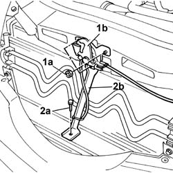
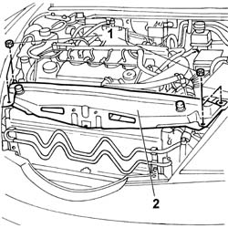
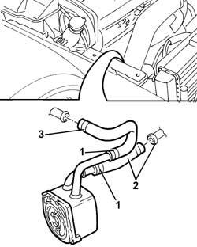

1088D47 Coolant supply and return HOSES to engine oil heat exchanger - R.R.
- Path
- Procedures > 10 ENGINE > 1088 ENGINE COOLING > 1088D COOLANT HOSES AND PIPES > 1088D47 Coolant supply and return HOSES to engine oil heat exchanger - R.R.
- Kind
- repair procedure (removal / refitting; the operation number is the code)
- Applies to
- engines: 2.4 JTD 10V; all production periods
- Interactive page
- https://sloeber94.github.io/elrnDB-lThss/en/#/104750
Applies to: engines: 2.4 JTD 10V; all production periods
 Removing
Removing
 Refitting
RefittingSee in Op. 1016A10 SOUND-PROOFING COVER - R.R.
1. Undo the fixing nuts (1a) and remove the bonnet lock (1b) from its housing in the crossmember.
2. Undo the lower unti (2a) and remove the lock reinforcement bracket (2b).

Applies to: engines: 2.4 JTD 10V; all production periods
1. Undo the fixing nuts.
2. Remove the upper front crossmember.

Applies to: engines: 2.4 JTD 10V; all production periods
See in Op. 7055B54 PROTECTION/GUARD under engine - R.R.
See in Op. 1084B30 CARTRIDGE ENGINE OIL FILTER -R.R.
- Have a suitable container for collecting the coolant ready.
- Disconnect the lower radiator pipe and drain the engine cooling system.
1. Disconnect the coolant supply and return hoses from the heat exchanger.
2. Disconnect the hose from the rigid section of the pipe.
- Lower the lift.
3. Disconnect the hose connected to the rigid water pump inlet pipe, then remove the two heat exchanger supply and return hoses.

Applies to: engines: 2.4 JTD 10V; all production periods
Refitting
Removing- Fit the supply and return hoses to the heat exchanger.
- Connect the hose to the pump rigid inlet pipe.
- Raise the lift.
- Connect the hose to the rigid section of the pipe.
- Connect the coolant supply and return hoses to the heat exchanger.
- Fit the upper front crossmember and tighten the fixing nuts to torque.
 | Value - daNm | Fastening | Component | Ø |
|---|---|---|---|---|
. | 0.6 | Bolts | FRONT WING CROSSMEMBER HEADLAMP HOUSINGS | M6 |
- Fit the bonnet lid lock complete with bracket and tighten the nuts fixing it to the upper crossmember and to the lower crossmember to torque.
See in Op. 1084B30 CARTRIDGE ENGINE OIL FILTER -R.R.
See in Op. 0010T11 ENGINE OIL - Check level and top up if necessary
- [0010T11]
See in Op. 0010T20 Engine REFRIGERANT FLUID - Change
See in Op. 0010T21 ENGINE COOLANT - Check density and top up if necessary
- [0010T21]